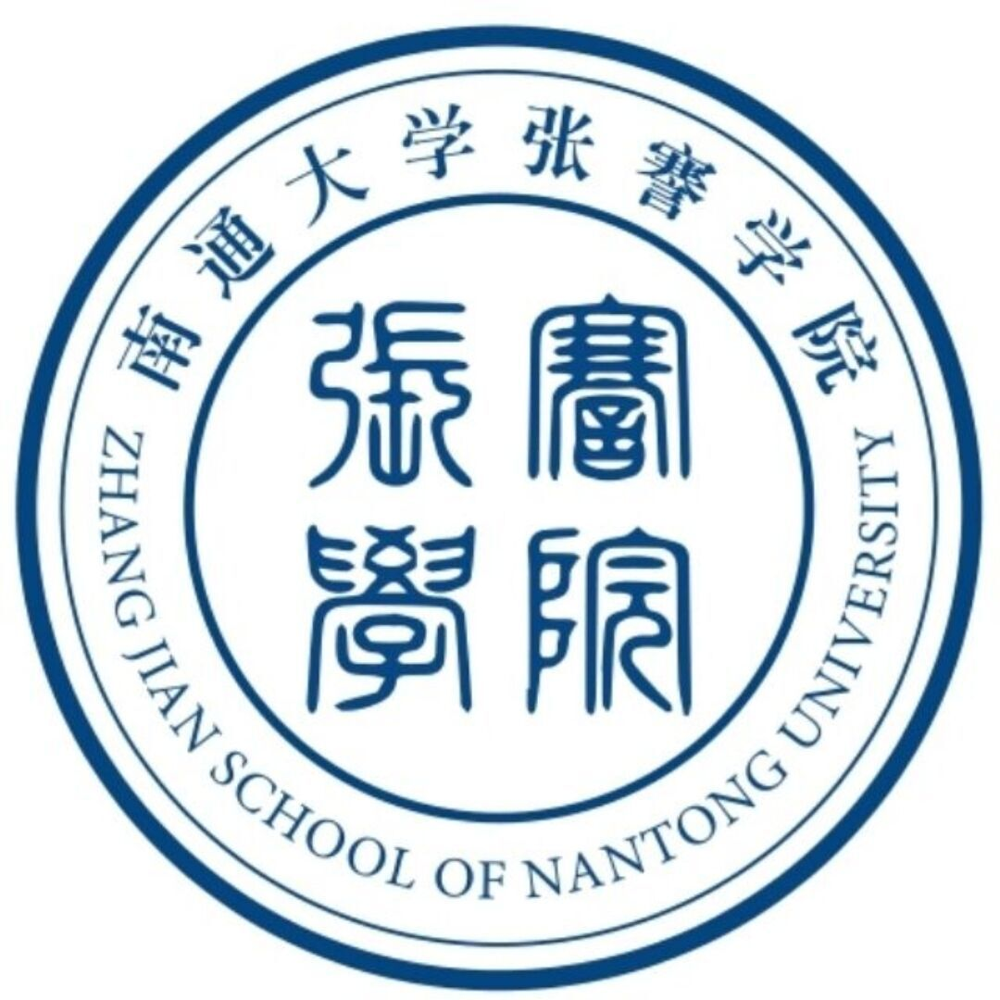

欢迎访问南通大学张謇学院智能视觉与智能机器人实验室。智能视觉与智能机器人实验室于2020年9月正式成立，依托南通大学张謇学院，是张謇学院学生开展科研训练的主要平台。
智能视觉与智能机器人实验室主要围绕计算机视觉和智能机器人控制两个方向展开研究。计算机视觉研究包括图像识别、目标检测、目标分割等，通过运用深度学习算法完成指定的视觉任务。目前，实验室在计算机视觉方向研究荣获全国大学生智能汽车竞赛国家级一等奖 (南通大学首次) 等国家级奖项8项。发表SCI/EI论文、中文核心论文等学术论文8篇。智能机器人控制方向研究主要包括运用强化学习算法进行机器人控制、机器臂抓取与控制算法研究等。目前在智能机器人控制方向实验室已荣获全国大学生智能汽车竞赛国家级二等奖等竞赛奖项5项。此外，实验室学生发明专利授权2项，申请发明专利30余项。
实验室成员:实验室目前共有指导教师3名(副教授一名)、26名成员，其中2018级4名，2019级11名，2020级9名，2021级2名，实验室2018级保研率100%。欢迎优秀的同学加盟智能视觉与智能机器人实验室(IVR-Lab),一起努力，一起成长。